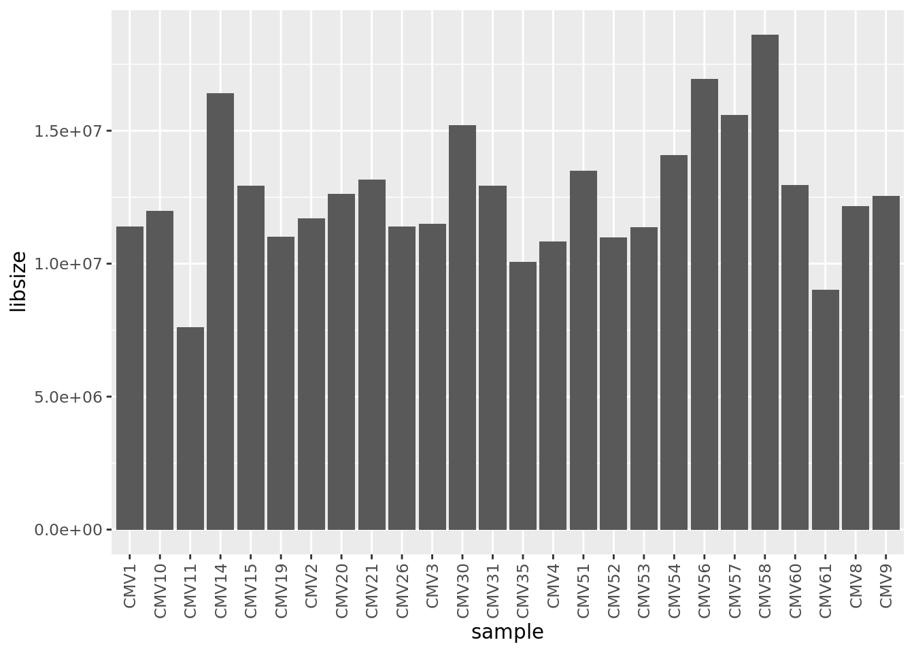
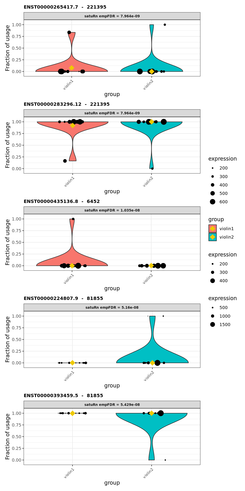
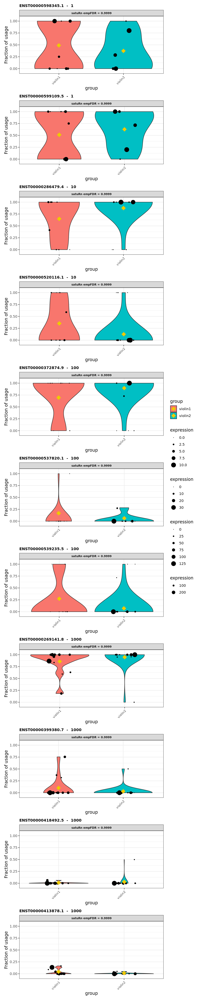

Last updated: 2021-08-02
Checks: 7 0
Knit directory: amnio-cell-free-RNA/
This reproducible R Markdown analysis was created with workflowr (version 1.6.2). The Checks tab describes the reproducibility checks that were applied when the results were created. The Past versions tab lists the development history.
Great! Since the R Markdown file has been committed to the Git repository, you know the exact version of the code that produced these results.
Great job! The global environment was empty. Objects defined in the global environment can affect the analysis in your R Markdown file in unknown ways. For reproduciblity it’s best to always run the code in an empty environment.
The command set.seed(20200224) was run prior to running the code in the R Markdown file. Setting a seed ensures that any results that rely on randomness, e.g. subsampling or permutations, are reproducible.
Great job! Recording the operating system, R version, and package versions is critical for reproducibility.
Nice! There were no cached chunks for this analysis, so you can be confident that you successfully produced the results during this run.
Great job! Using relative paths to the files within your workflowr project makes it easier to run your code on other machines.
Great! You are using Git for version control. Tracking code development and connecting the code version to the results is critical for reproducibility.
The results in this page were generated with repository version 6328258. See the Past versions tab to see a history of the changes made to the R Markdown and HTML files.
Note that you need to be careful to ensure that all relevant files for the analysis have been committed to Git prior to generating the results (you can use wflow_publish or wflow_git_commit). workflowr only checks the R Markdown file, but you know if there are other scripts or data files that it depends on. Below is the status of the Git repository when the results were generated:
Ignored files:
Ignored: .Rhistory
Ignored: .Rproj.user/
Ignored: .bpipe/
Ignored: analysis/old_analysis/
Ignored: code/.bpipe/
Ignored: code/.rnaseq-test.groovy.swp
Ignored: data/.bpipe/
Ignored: data/190717_A00692_0021_AHLLHFDSXX/
Ignored: data/190729_A00692_0022_AHLLHFDSXX/
Ignored: data/190802_A00692_0023_AHLLHFDSXX/
Ignored: data/200612_A00692_0107_AHN3YCDMXX.tar
Ignored: data/200612_A00692_0107_AHN3YCDMXX/
Ignored: data/200626_A00692_0111_AHNJH7DMXX.tar
Ignored: data/200626_A00692_0111_AHNJH7DMXX/
Ignored: data/CMV-AF-database-corrected-oct-2020.csv
Ignored: data/CMV-AF-database-final-included-samples.csv
Ignored: data/GONE4.10.13.txt
Ignored: data/HK_genes.txt
Ignored: data/IPA molecule summary.xls
Ignored: data/IPA-molecule-summary.csv
Ignored: data/brain-development-geneset.txt
Ignored: data/commandlog.txt
Ignored: data/deduped_rRNA_coverage.txt
Ignored: data/gene-transcriptome-analysis/
Ignored: data/hg38_rRNA.bed
Ignored: data/hg38_rRNA.saf
Ignored: data/ignore-overlap-mapping/
Ignored: data/ignore/
Ignored: data/joindata.csv
Ignored: data/metadata.csv
Ignored: data/multiqc_data/
Ignored: data/multiqc_report.html
Ignored: data/rds/
Ignored: data/samples.csv
Ignored: output/c2Ens.RData
Ignored: output/c5Ens.RData
Ignored: output/exclude-CMV11/
Ignored: output/hEns.RData
Ignored: output/keggEns.RData
Ignored: output/salmon-limma-voom-c5Cam.csv
Ignored: output/salmon-limma-voom.Rmd/
Ignored: output/salmon-limma-voom.csv
Ignored: output/salmon-ruv-all-gsea-c2.csv
Ignored: output/salmon-ruv-all-gsea-c5.csv
Ignored: output/salmon-ruv-all.csv
Ignored: output/salmon-ruvseq-edger.csv
Ignored: output/star-fc-limma-voom-all-gsea-c2.csv
Ignored: output/star-fc-limma-voom-all-gsea-c5.csv
Ignored: output/star-fc-limma-voom-all.csv
Ignored: output/star-fc-limma-voom-no_us_ab-gsea-c2.csv
Ignored: output/star-fc-limma-voom-no_us_ab-gsea-c5.csv
Ignored: output/star-fc-limma-voom-no_us_ab.csv
Ignored: output/star-fc-ruv-all-gsea-c2.csv
Ignored: output/star-fc-ruv-all-gsea-c5.csv
Ignored: output/star-fc-ruv-all.csv
Ignored: output/star-fc-ruv-no_us_ab-gsea-c2.csv
Ignored: output/star-fc-ruv-no_us_ab-gsea-c5.csv
Ignored: output/star-fc-ruv-no_us_ab.csv
Untracked files:
Untracked: renv.lock
Untracked: satuRn_0.99.7.tar.gz
Unstaged changes:
Modified: .gitignore
Note that any generated files, e.g. HTML, png, CSS, etc., are not included in this status report because it is ok for generated content to have uncommitted changes.
These are the previous versions of the repository in which changes were made to the R Markdown (analysis/salmon-SatuRn.Rmd) and HTML (docs/salmon-SatuRn.html) files. If you’ve configured a remote Git repository (see ?wflow_git_remote), click on the hyperlinks in the table below to view the files as they were in that past version.
| File | Version | Author | Date | Message |
|---|---|---|---|---|
| Rmd | 6328258 | Jovana Maksimovic | 2021-08-02 | wflow_publish(c(“analysis/salmon-BANDITS.Rmd”, “analysis/salmon-DRIMseq.Rmd”, |
| html | 8e31f43 | Jovana Maksimovic | 2021-07-09 | Build site. |
| Rmd | 382671c | Jovana Maksimovic | 2021-07-09 | wflow_publish(“analysis/salmon-SatuRn.Rmd”) |
Load sample information.
| id | CMV_status | pair | sex | GA_at_amnio | indication |
|---|---|---|---|---|---|
| CMV2 | neg | M1 | F | 20 | no_us_ab |
| CMV1 | pos | M1 | F | 21 | no_us_ab |
| CMV4 | pos | M2 | M | 21 | no_us_ab |
| CMV3 | neg | M2 | M | 22 | no_us_ab |
| CMV10 | neg | NC2 | F | 20 | us_ab |
| CMV11 | pos | NC1 | F | 19 | us_ab |
| CMV19 | pos | NC2 | F | 18 | no_us_ab |
| CMV35 | neg | L5 | M | 21 | no_us_ab |
| CMV30 | pos | L1 | F | 21 | no_us_ab |
| CMV31 | neg | L1 | F | 21 | no_us_ab |
| CMV8 | neg | L2 | F | 23 | no_us_ab |
| CMV9 | pos | L2 | F | 23 | no_us_ab |
| CMV26 | pos | L3 | F | 22 | no_us_ab |
| CMV56 | neg | L3 | F | 21 | no_us_ab |
| CMV14 | neg | L4 | F | 21 | no_us_ab |
| CMV15 | pos | L4 | F | 22 | no_us_ab |
| CMV20 | pos | L5 | M | 21 | no_us_ab |
| CMV51 | neg | L6 | M | 22 | no_us_ab |
| CMV57 | pos | L6 | M | 21 | no_us_ab |
| CMV58 | pos | L7 | M | 20 | no_us_ab |
| CMV60 | neg | L7 | M | 20 | no_us_ab |
| CMV52 | pos | L8 | M | 22 | no_us_ab |
| CMV61 | neg | L8 | M | 22 | no_us_ab |
| CMV54 | neg | L9 | F | 21 | no_us_ab |
| CMV53 | pos | L9 | F | 21 | us_ab |
| CMV21 | neg | NC1 | F | 21 | no_us_ab |
Only retain paired samples with clinical information for donstream analysis.
int <- intersect(names(files), targets$id)
targets <- targets[match(int, targets$id),]
files <- files[match(int, names(files))]
files CMV30
"/oshlack_lab/jovana.maksimovic/projects/MCRI/lisa.hui/amnio-cell-free-RNA/data/gene-transcriptome-analysis/quants/190717_A00692_0021_TL1906128_CMV30_MAN-20190712_OvationSoloRNA_L000/quant.sf"
CMV31
"/oshlack_lab/jovana.maksimovic/projects/MCRI/lisa.hui/amnio-cell-free-RNA/data/gene-transcriptome-analysis/quants/190717_A00692_0021_TL1906129_CMV31_MAN-20190712_OvationSoloRNA_L000/quant.sf"
CMV8
"/oshlack_lab/jovana.maksimovic/projects/MCRI/lisa.hui/amnio-cell-free-RNA/data/gene-transcriptome-analysis/quants/190717_A00692_0021_TL1906130_CMV8_MAN-20190712_OvationSoloRNA_L000/quant.sf"
CMV9
"/oshlack_lab/jovana.maksimovic/projects/MCRI/lisa.hui/amnio-cell-free-RNA/data/gene-transcriptome-analysis/quants/190717_A00692_0021_TL1906131_CMV9_MAN-20190712_OvationSoloRNA_L000/quant.sf"
CMV26
"/oshlack_lab/jovana.maksimovic/projects/MCRI/lisa.hui/amnio-cell-free-RNA/data/gene-transcriptome-analysis/quants/190717_A00692_0021_TL1906132_CMV26_MAN-20190712_OvationSoloRNA_L000/quant.sf"
CMV14
"/oshlack_lab/jovana.maksimovic/projects/MCRI/lisa.hui/amnio-cell-free-RNA/data/gene-transcriptome-analysis/quants/190717_A00692_0021_TL1906134_CMV14_MAN-20190712_OvationSoloRNA_L000/quant.sf"
CMV15
"/oshlack_lab/jovana.maksimovic/projects/MCRI/lisa.hui/amnio-cell-free-RNA/data/gene-transcriptome-analysis/quants/190717_A00692_0021_TL1906135_CMV15_MAN-20190712_OvationSoloRNA_L000/quant.sf"
CMV20
"/oshlack_lab/jovana.maksimovic/projects/MCRI/lisa.hui/amnio-cell-free-RNA/data/gene-transcriptome-analysis/quants/190717_A00692_0021_TL1906136_CMV20_MAN-20190712_OvationSoloRNA_L000/quant.sf"
CMV21
"/oshlack_lab/jovana.maksimovic/projects/MCRI/lisa.hui/amnio-cell-free-RNA/data/gene-transcriptome-analysis/quants/190717_A00692_0021_TL1906137_CMV21_MAN-20190712_OvationSoloRNA_L000/quant.sf"
CMV1
"/oshlack_lab/jovana.maksimovic/projects/MCRI/lisa.hui/amnio-cell-free-RNA/data/gene-transcriptome-analysis/quants/190717_A00692_0021_TL1906138_CMV1_MAN-20190712_OvationSoloRNA_L000/quant.sf"
CMV2
"/oshlack_lab/jovana.maksimovic/projects/MCRI/lisa.hui/amnio-cell-free-RNA/data/gene-transcriptome-analysis/quants/190717_A00692_0021_TL1906139_CMV2_MAN-20190712_OvationSoloRNA_L000/quant.sf"
CMV3
"/oshlack_lab/jovana.maksimovic/projects/MCRI/lisa.hui/amnio-cell-free-RNA/data/gene-transcriptome-analysis/quants/190717_A00692_0021_TL1906140_CMV3_MAN-20190712_OvationSoloRNA_L000/quant.sf"
CMV4
"/oshlack_lab/jovana.maksimovic/projects/MCRI/lisa.hui/amnio-cell-free-RNA/data/gene-transcriptome-analysis/quants/190717_A00692_0021_TL1906141_CMV4_MAN-20190712_OvationSoloRNA_L000/quant.sf"
CMV10
"/oshlack_lab/jovana.maksimovic/projects/MCRI/lisa.hui/amnio-cell-free-RNA/data/gene-transcriptome-analysis/quants/190717_A00692_0021_TL1906142_CMV10_MAN-20190712_OvationSoloRNA_L000/quant.sf"
CMV11
"/oshlack_lab/jovana.maksimovic/projects/MCRI/lisa.hui/amnio-cell-free-RNA/data/gene-transcriptome-analysis/quants/190717_A00692_0021_TL1906143_CMV11_MAN-20190712_OvationSoloRNA_L000/quant.sf"
CMV19
"/oshlack_lab/jovana.maksimovic/projects/MCRI/lisa.hui/amnio-cell-free-RNA/data/gene-transcriptome-analysis/quants/190717_A00692_0021_TL1906145_CMV19_MAN-20190712_OvationSoloRNA_L000/quant.sf"
CMV35
"/oshlack_lab/jovana.maksimovic/projects/MCRI/lisa.hui/amnio-cell-free-RNA/data/gene-transcriptome-analysis/quants/190717_A00692_0021_TL1906146_CMV35_MAN-20190712_OvationSoloRNA_L000/quant.sf"
CMV51
"/oshlack_lab/jovana.maksimovic/projects/MCRI/lisa.hui/amnio-cell-free-RNA/data/gene-transcriptome-analysis/quants/200612_A00692_0107_ML205836_CMV51_MAN-20200611_OvationSoloRNA_L000/quant.sf"
CMV52
"/oshlack_lab/jovana.maksimovic/projects/MCRI/lisa.hui/amnio-cell-free-RNA/data/gene-transcriptome-analysis/quants/200612_A00692_0107_ML205837_CMV52_MAN-20200611_OvationSoloRNA_L000/quant.sf"
CMV53
"/oshlack_lab/jovana.maksimovic/projects/MCRI/lisa.hui/amnio-cell-free-RNA/data/gene-transcriptome-analysis/quants/200612_A00692_0107_ML205838_CMV53_MAN-20200611_OvationSoloRNA_L000/quant.sf"
CMV54
"/oshlack_lab/jovana.maksimovic/projects/MCRI/lisa.hui/amnio-cell-free-RNA/data/gene-transcriptome-analysis/quants/200612_A00692_0107_ML205839_CMV54_MAN-20200611_OvationSoloRNA_L000/quant.sf"
CMV56
"/oshlack_lab/jovana.maksimovic/projects/MCRI/lisa.hui/amnio-cell-free-RNA/data/gene-transcriptome-analysis/quants/200612_A00692_0107_ML205840_CMV56_MAN-20200611_OvationSoloRNA_L000/quant.sf"
CMV57
"/oshlack_lab/jovana.maksimovic/projects/MCRI/lisa.hui/amnio-cell-free-RNA/data/gene-transcriptome-analysis/quants/200612_A00692_0107_ML205841_CMV57_MAN-20200611_OvationSoloRNA_L000/quant.sf"
CMV58
"/oshlack_lab/jovana.maksimovic/projects/MCRI/lisa.hui/amnio-cell-free-RNA/data/gene-transcriptome-analysis/quants/200612_A00692_0107_ML205842_CMV58_MAN-20200611_OvationSoloRNA_L000/quant.sf"
CMV60
"/oshlack_lab/jovana.maksimovic/projects/MCRI/lisa.hui/amnio-cell-free-RNA/data/gene-transcriptome-analysis/quants/200612_A00692_0107_ML205843_CMV60_MAN-20200611_OvationSoloRNA_L000/quant.sf"
CMV61
"/oshlack_lab/jovana.maksimovic/projects/MCRI/lisa.hui/amnio-cell-free-RNA/data/gene-transcriptome-analysis/quants/200612_A00692_0107_ML205844_CMV61_MAN-20200611_OvationSoloRNA_L000/quant.sf" Read in transcript count data and remove transcripts with no counts.
txi <- tximport(files, type = "salmon", txOut = TRUE)reading in files with read_tsv1 2 3 4 5 6 7 8 9 10 11 12 13 14 15 16 17 18 19 20 21 22 23 24 25 26 cts <- txi$counts
cts <- cts[rowSums(cts) > 0,]
dim(cts)[1] 155749 26Plot effective library size per sample.
colSums(cts) %>%
data.frame %>%
rownames_to_column(var = "sample") %>%
dplyr::rename("libsize" = ".") %>%
ggplot(aes(x = sample, y = libsize)) +
geom_bar(stat = "identity") +
theme(axis.text.x = element_text(angle = 90, hjust = 1, vjust = 0.5))
Associate transcripts with gene IDs for gene-level summarization. Filter out genes without Entrez IDs, genes with only one transcript isoform and transcripts without any counts across all samples.
txdb <- TxDb.Hsapiens.UCSC.hg38.knownGene
txdf <- select(txdb, keys(txdb, keytype = "TXNAME"),
"GENEID", "TXNAME", "SYMBOL") %>%
drop_na(GENEID)'select()' returned 1:1 mapping between keys and columnstxdf %>% dplyr::inner_join(select(org.Hs.eg.db,
keys = unique(txdf$GENEID),
columns = c("SYMBOL","ENTREZID"),
keytype="ENTREZID"),
by = c("GENEID" = "ENTREZID")) %>%
dplyr::distinct() %>%
dplyr::filter((duplicated(GENEID) |
duplicated(GENEID, fromLast = TRUE)) &
TXNAME %in% rownames(cts)) -> txdf'select()' returned 1:1 mapping between keys and columnshead(txdf, n = 10) %>% knitr::kable()| TXNAME | GENEID | SYMBOL |
|---|---|---|
| ENST00000623808.3 | 643837 | LINC01128 |
| ENST00000445118.7 | 643837 | LINC01128 |
| ENST00000669922.1 | 643837 | LINC01128 |
| ENST00000670780.1 | 643837 | LINC01128 |
| ENST00000667414.1 | 643837 | LINC01128 |
| ENST00000666741.1 | 643837 | LINC01128 |
| ENST00000623070.4 | 643837 | LINC01128 |
| ENST00000659124.1 | 643837 | LINC01128 |
| ENST00000658846.1 | 643837 | LINC01128 |
| ENST00000608189.5 | 643837 | LINC01128 |
Match transcript count data to transcript annotation table.
cts <- cts[match(txdf$TXNAME, rownames(cts)),]
head(cts) %>% knitr::kable()| CMV30 | CMV31 | CMV8 | CMV9 | CMV26 | CMV14 | CMV15 | CMV20 | CMV21 | CMV1 | CMV2 | CMV3 | CMV4 | CMV10 | CMV11 | CMV19 | CMV35 | CMV51 | CMV52 | CMV53 | CMV54 | CMV56 | CMV57 | CMV58 | CMV60 | CMV61 | |
|---|---|---|---|---|---|---|---|---|---|---|---|---|---|---|---|---|---|---|---|---|---|---|---|---|---|---|
| ENST00000623808.3 | 0.000 | 0.000 | 0.000 | 0.000 | 0.000 | 0.000 | 0.000 | 0.000 | 0.000 | 0.000 | 2.000 | 0.000 | 0.000 | 0.000 | 0.000 | 2.840 | 0.000 | 0.000 | 0.000 | 0.000 | 1.113 | 0.000 | 0.000 | 0.000 | 0.00 | 0.000 |
| ENST00000445118.7 | 81.080 | 49.139 | 51.049 | 35.215 | 40.649 | 71.627 | 112.693 | 72.270 | 88.424 | 23.261 | 36.969 | 3.356 | 25.536 | 88.967 | 15.132 | 3.924 | 51.927 | 39.892 | 80.193 | 45.610 | 48.656 | 85.781 | 95.585 | 155.849 | 89.77 | 52.703 |
| ENST00000669922.1 | 7.952 | 0.000 | 0.000 | 0.000 | 0.000 | 0.000 | 0.000 | 37.732 | 7.738 | 0.000 | 6.574 | 0.000 | 0.000 | 1.538 | 0.000 | 18.000 | 0.000 | 11.000 | 3.808 | 0.000 | 0.000 | 0.000 | 0.000 | 0.000 | 0.00 | 0.000 |
| ENST00000670780.1 | 15.481 | 22.471 | 0.000 | 0.000 | 24.094 | 14.058 | 0.000 | 0.000 | 0.000 | 4.001 | 0.000 | 15.947 | 0.000 | 0.000 | 0.000 | 0.000 | 5.814 | 0.000 | 0.000 | 16.986 | 11.345 | 0.000 | 1.836 | 0.000 | 6.21 | 20.954 |
| ENST00000667414.1 | 0.000 | 1.155 | 0.000 | 0.000 | 0.000 | 0.000 | 0.000 | 1.196 | 0.000 | 0.000 | 0.000 | 1.049 | 1.436 | 0.000 | 0.000 | 0.000 | 0.000 | 0.000 | 0.000 | 0.000 | 0.000 | 0.000 | 0.000 | 0.000 | 0.00 | 0.000 |
| ENST00000666741.1 | 5.858 | 0.000 | 0.000 | 0.000 | 0.000 | 37.606 | 7.820 | 0.000 | 0.000 | 21.911 | 16.865 | 0.000 | 49.674 | 0.000 | 0.000 | 0.000 | 0.000 | 39.220 | 25.097 | 0.000 | 0.000 | 0.000 | 0.000 | 0.000 | 0.00 | 0.000 |
Next, we perform some data wrangling steps to get the data in a format that is suited for satuRn.
! Important: satuRn is implemented such that the columns with transcript identifiers is names isoform_id, while the column containing gene identifiers should be named gene_id. In addition, following chunk removes transcripts that are the only isoform expressed of a certain gene, as they cannot be used in a DTU analysis.
txdf %>% dplyr::rename(isoform_id = TXNAME,
gene_id = GENEID) -> txdf
dim(txdf)[1] 130034 3Here we perform some feature-level filtering. For this task, we adopt the filtering criterion that is implemented in the R package BANDITS.
transcripts_to_keep <- filter_transcripts(gene_to_transcript = txdf[, c(2,1)],
transcript_counts = cts,
min_transcript_proportion = 0.01,
min_transcript_counts = min(table(targets$CMV_status)),
min_gene_counts = ncol(cts))After filtering, 50.63% of transcripts are keptlength(transcripts_to_keep)[1] 65831Keep only transcripts that pass filtering criteria.
keep <- match(transcripts_to_keep, rownames(cts))
cts <- cts[keep,]
txdf <- txdf[keep,]All three main functions of satuRn require a SummarizedExperiment object as an input class.
Do not forget to include the design matrix formula to the SummarizedExperiment as indicated below. As such, the object contains all the information required for the downstream DTU analysis.
sumExp <- SummarizedExperiment::SummarizedExperiment(
assays = list(counts = cts),
colData = targets,
rowData = txdf
)
# specify design formula from colData
metadata(sumExp)$formula <- ~ 0 + as.factor(colData(sumExp)$CMV_status)
sumExpclass: SummarizedExperiment
dim: 65831 26
metadata(1): formula
assays(1): counts
rownames(65831): ENST00000598345.1 ENST00000599109.5 ...
ENST00000543927.6 ENST00000638598.2
rowData names(3): isoform_id gene_id SYMBOL
colnames(26): CMV30 CMV31 ... CMV60 CMV61
colData names(6): id CMV_status ... GA_at_amnio indicationThe fitDTU function of satuRn is used to model transcript usage in different groups of samples or cells. Here we adopt the default settings of the function.
system.time({
sumExp <- satuRn::fitDTU(
object = sumExp,
formula = ~ 0 + CMV_status,
parallel = FALSE,
BPPARAM = BiocParallel::bpparam(),
verbose = TRUE
)
}) user system elapsed
106.943 0.030 106.982 First, we set up a contrast matrix. This allows us to test for differential transcript usage between groups of interest.
group <- as.factor(targets$CMV_status)
#pair <- as.factor(targets$pair)
design <- model.matrix(~ 0 + group)# + pair) # construct design matrix
colnames(design)[1:2] <- levels(group)
L <- limma::makeContrasts(
Contrast1 = neg - pos,
levels = design
)
L # contrast matrix Contrasts
Levels Contrast1
neg 1
pos -1Next we can perform differential usage testing using testDTU. We again adopt default settings.
sumExp <- satuRn::testDTU(
object = sumExp,
contrasts = L,
plot = FALSE,
sort = TRUE
)The test results are now saved into the rowData of our SummarizedExperiment object under the name fitDTUResult_ followed by the name of the contrast of interest (i.e. the column names of the contrast matrix). The results can be accessed as follows:
head(rowData(sumExp)[["fitDTUResult_Contrast1"]]) %>% knitr::kable()| estimates | se | df | t | pval | regular_FDR | empirical_pval | empirical_FDR | |
|---|---|---|---|---|---|---|---|---|
| ENST00000265417.7 | 3.958770e+15 | 2.132338e+14 | 25.77265 | 18.56540 | 0 | 0 | 0 | 0.0e+00 |
| ENST00000283296.12 | -3.958770e+15 | 2.132338e+14 | 25.77265 | -18.56540 | 0 | 0 | 0 | 0.0e+00 |
| ENST00000435136.8 | -3.926028e+15 | 2.189772e+14 | 25.77265 | -17.92894 | 0 | 0 | 0 | 0.0e+00 |
| ENST00000224807.9 | 3.832546e+15 | 2.397173e+14 | 25.77265 | 15.98777 | 0 | 0 | 0 | 1.0e-07 |
| ENST00000393459.5 | -3.832546e+15 | 2.397173e+14 | 25.77265 | -15.98777 | 0 | 0 | 0 | 1.0e-07 |
| ENST00000671800.1 | 3.339259e+15 | 2.563662e+14 | 25.77265 | 13.02535 | 0 | 0 | 0 | 1.5e-06 |
Finally, we may visualize the usage of select transcripts in select groups of interest.
group1 <- rownames(colData(sumExp))[colData(sumExp)$CMV_status ==
"neg"]
group2 <- rownames(colData(sumExp))[colData(sumExp)$CMV_status ==
"pos"]
plots <- satuRn::plotDTU(
object = sumExp,
contrast = "Contrast1",
groups = list(group1, group2),
coefficients = list(c(1, 0),
c(0, 1)),
summaryStat = "model",
top.n = 5
)
wrap_plots(plots, ncol = 1) + plot_layout(guides = "collect")
satuRn returns transcript-level p-values for each of the specified contrasts. While we have shown that satuRn is able to adequately control the false discovery rate (FDR) at the transcript level (Gilis Jeroen 2021), (Van den Berge Koen 2017) argued that it is often desirable to control the FDR at the gene level. This boosts statistical power and eases downstream biological interpretation and validation, which typically occur at the gene level.
To this end, (Van den Berge Koen 2017) developed a testing procedure that is implemented in the BioConductor R package stageR. The procedure consists of two stages; a screening stage and a confirmation stage.
In the screening stage, gene-level FDR-adjusted p-values are computed, which aggregate the evidence for differential transcript usage over all transcripts within the gene. Only genes with an FDR below the desired nominal level are further considered in the second stage. In the confirmation stage, transcript-level p-values are adjusted for those genes, using a FWER-controlling method on the FDR-adjusted significance level.
In its current implementation, stageR can only perform stage-wise testing if only one contrast is of interest in a DTU setting. An analogous correction for the assessment of multiple contrasts for multiple transcripts per gene has not yet been implemented.
# transcript level p-values from satuRn
pvals <- rowData(sumExp)[["fitDTUResult_Contrast1"]]$empirical_pval
# compute gene level q-values
geneID <- factor(rowData(sumExp)$gene_id)
geneSplit <- split(seq(along = geneID), geneID)
pGene <- sapply(geneSplit, function(i) min(pvals[i]))
pGene[is.na(pGene)] <- 1
theta <- unique(sort(pGene))
# gene-level significance testing
q <- DEXSeq:::perGeneQValueExact(pGene, theta, geneSplit)
qScreen <- rep(NA_real_, length(pGene))
qScreen <- q[match(pGene, theta)]
qScreen <- pmin(1, qScreen)
names(qScreen) <- names(geneSplit)
# prepare stageR input
tx2gene <- as.data.frame(rowData(sumExp)[c("isoform_id", "gene_id")])
colnames(tx2gene) <- c("transcript", "gene")
pConfirmation <- matrix(matrix(pvals),
ncol = 1,
dimnames = list(rownames(tx2gene), "transcript")
)
# create a stageRTx object
stageRObj <- stageR::stageRTx(
pScreen = qScreen,
pConfirmation = pConfirmation,
pScreenAdjusted = TRUE,
tx2gene = tx2gene
)
# perform the two-stage testing procedure
stageRObj <- stageR::stageWiseAdjustment(
object = stageRObj,
method = "dtu",
alpha = 0.05,
allowNA = TRUE
)
# retrieves the adjusted p-values from the stageRTx object
padj <- stageR::getAdjustedPValues(stageRObj,
order = FALSE,
onlySignificantGenes = TRUE
)The returned adjusted p-values are based on a stage-wise testing approach and are only valid for the provided target OFDR level of 5%. If a different target OFDR level is of interest,the entire adjustment should be re-run. padj %>% knitr::kable()| geneID | txID | gene | transcript |
|---|---|---|---|
| 1 | ENST00000598345.1 | 0.0000000 | 0.0000000 |
| 1 | ENST00000599109.5 | 0.0000000 | 0.0000000 |
| 10 | ENST00000286479.4 | 0.0000000 | 0.0000000 |
| 10 | ENST00000520116.1 | 0.0000000 | 0.0000000 |
| 100 | ENST00000372874.9 | 0.0000001 | 0.0000000 |
| 100 | ENST00000537820.1 | 0.0000001 | 0.0000006 |
| 100 | ENST00000539235.5 | 0.0000001 | 0.0000015 |
| 1000 | ENST00000269141.8 | 0.0346337 | 0.0171931 |
| 1000 | ENST00000399380.7 | 0.0346337 | 0.2700311 |
| 1000 | ENST00000418492.5 | 0.0346337 | 0.6179705 |
| 1000 | ENST00000413878.1 | 0.0346337 | 0.6179705 |
select(org.Hs.eg.db,
keys = padj$geneID,
columns = c("SYMBOL","ENTREZID"),
keytype = "ENTREZID") %>%
dplyr::distinct() %>%
dplyr::inner_join(padj, by = c("ENTREZID" = "geneID")) %>%
dplyr::arrange(gene, transcript) -> top_gene'select()' returned many:1 mapping between keys and columnstop_gene %>% knitr::kable()| ENTREZID | SYMBOL | txID | gene | transcript |
|---|---|---|---|---|
| 1 | A1BG | ENST00000598345.1 | 0.0000000 | 0.0000000 |
| 1 | A1BG | ENST00000599109.5 | 0.0000000 | 0.0000000 |
| 10 | NAT2 | ENST00000286479.4 | 0.0000000 | 0.0000000 |
| 10 | NAT2 | ENST00000520116.1 | 0.0000000 | 0.0000000 |
| 100 | ADA | ENST00000372874.9 | 0.0000001 | 0.0000000 |
| 100 | ADA | ENST00000537820.1 | 0.0000001 | 0.0000006 |
| 100 | ADA | ENST00000539235.5 | 0.0000001 | 0.0000015 |
| 1000 | CDH2 | ENST00000269141.8 | 0.0346337 | 0.0171931 |
| 1000 | CDH2 | ENST00000399380.7 | 0.0346337 | 0.2700311 |
| 1000 | CDH2 | ENST00000418492.5 | 0.0346337 | 0.6179705 |
| 1000 | CDH2 | ENST00000413878.1 | 0.0346337 | 0.6179705 |
group1 <- rownames(colData(sumExp))[colData(sumExp)$CMV_status ==
"neg"]
group2 <- rownames(colData(sumExp))[colData(sumExp)$CMV_status ==
"pos"]
plots <- satuRn::plotDTU(
object = sumExp,
contrast = "Contrast1",
groups = list(group1, group2),
coefficients = list(c(1, 0),
c(0, 1)),
summaryStat = "model",
genes = unique(padj$geneID)
)
wrap_plots(plots, ncol = 1) + plot_layout(guides = "collect")Warning: Removed 11 rows containing non-finite values (stat_ydensity).Warning: Removed 11 rows containing missing values (geom_point).Warning: Removed 11 rows containing non-finite values (stat_ydensity).Warning: Removed 11 rows containing missing values (geom_point).Warning: Removed 8 rows containing non-finite values (stat_ydensity).Warning: Removed 8 rows containing missing values (geom_point).Warning: Removed 8 rows containing non-finite values (stat_ydensity).Warning: Removed 8 rows containing missing values (geom_point).Warning: Removed 7 rows containing non-finite values (stat_ydensity).Warning: Removed 7 rows containing missing values (geom_point).Warning: Removed 7 rows containing non-finite values (stat_ydensity).Warning: Removed 7 rows containing missing values (geom_point).Warning: Removed 7 rows containing non-finite values (stat_ydensity).Warning: Removed 7 rows containing missing values (geom_point).
sessionInfo()R version 4.0.2 (2020-06-22)
Platform: x86_64-pc-linux-gnu (64-bit)
Running under: CentOS Linux 7 (Core)
Matrix products: default
BLAS: /config/binaries/R/4.0.2/lib64/R/lib/libRblas.so
LAPACK: /config/binaries/R/4.0.2/lib64/R/lib/libRlapack.so
locale:
[1] LC_CTYPE=en_AU.UTF-8 LC_NUMERIC=C
[3] LC_TIME=en_AU.UTF-8 LC_COLLATE=en_AU.UTF-8
[5] LC_MONETARY=en_AU.UTF-8 LC_MESSAGES=en_AU.UTF-8
[7] LC_PAPER=en_AU.UTF-8 LC_NAME=C
[9] LC_ADDRESS=C LC_TELEPHONE=C
[11] LC_MEASUREMENT=en_AU.UTF-8 LC_IDENTIFICATION=C
attached base packages:
[1] stats4 parallel stats graphics grDevices utils datasets
[8] methods base
other attached packages:
[1] BANDITS_1.6.0
[2] stageR_1.12.0
[3] DEXSeq_1.36.0
[4] RColorBrewer_1.1-2
[5] DESeq2_1.30.1
[6] BiocParallel_1.24.1
[7] SummarizedExperiment_1.20.0
[8] MatrixGenerics_1.2.1
[9] matrixStats_0.59.0
[10] edgeR_3.32.1
[11] limma_3.46.0
[12] TxDb.Hsapiens.UCSC.hg38.knownGene_3.10.0
[13] GenomicFeatures_1.42.1
[14] GenomicRanges_1.42.0
[15] GenomeInfoDb_1.26.7
[16] org.Hs.eg.db_3.12.0
[17] AnnotationDbi_1.52.0
[18] IRanges_2.24.1
[19] S4Vectors_0.28.1
[20] satuRn_0.99.7
[21] tximport_1.18.0
[22] patchwork_1.1.1
[23] NMF_0.23.0
[24] Biobase_2.50.0
[25] BiocGenerics_0.36.1
[26] cluster_2.1.0
[27] rngtools_1.5
[28] pkgmaker_0.32.2
[29] registry_0.5-1
[30] forcats_0.5.1
[31] stringr_1.4.0
[32] dplyr_1.0.4
[33] purrr_0.3.4
[34] readr_1.4.0
[35] tidyr_1.1.2
[36] tibble_3.1.2
[37] ggplot2_3.3.5
[38] tidyverse_1.3.0
[39] here_1.0.1
[40] workflowr_1.6.2
loaded via a namespace (and not attached):
[1] readxl_1.3.1 backports_1.2.1 DRIMSeq_1.18.0
[4] BiocFileCache_1.14.0 plyr_1.8.6 splines_4.0.2
[7] gridBase_0.4-7 digest_0.6.27 foreach_1.5.1
[10] htmltools_0.5.1.1 fansi_0.5.0 magrittr_2.0.1
[13] memoise_2.0.0 doParallel_1.0.16 annotate_1.68.0
[16] Biostrings_2.58.0 modelr_0.1.8 askpass_1.1
[19] prettyunits_1.1.1 colorspace_2.0-2 blob_1.2.1
[22] rvest_0.3.6 rappdirs_0.3.3 haven_2.3.1
[25] xfun_0.23 crayon_1.4.1 RCurl_1.98-1.3
[28] jsonlite_1.7.2 genefilter_1.72.1 survival_3.2-7
[31] iterators_1.0.13 glue_1.4.2 gtable_0.3.0
[34] zlibbioc_1.36.0 XVector_0.30.0 DelayedArray_0.16.3
[37] scales_1.1.1 DBI_1.1.1 Rcpp_1.0.6
[40] xtable_1.8-4 progress_1.2.2 bit_4.0.4
[43] httr_1.4.2 ellipsis_0.3.2 farver_2.1.0
[46] pkgconfig_2.0.3 XML_3.99-0.5 dbplyr_2.1.0
[49] locfit_1.5-9.4 utf8_1.2.1 labeling_0.4.2
[52] tidyselect_1.1.0 rlang_0.4.11 reshape2_1.4.4
[55] later_1.1.0.1 munsell_0.5.0 cellranger_1.1.0
[58] tools_4.0.2 cachem_1.0.4 cli_3.0.0
[61] generics_0.1.0 RSQLite_2.2.5 broom_0.7.4
[64] evaluate_0.14 fastmap_1.1.0 yaml_2.2.1
[67] knitr_1.31 bit64_4.0.5 fs_1.5.0
[70] doRNG_1.8.2 pbapply_1.4-3 whisker_0.4
[73] xml2_1.3.2 biomaRt_2.46.3 compiler_4.0.2
[76] rstudioapi_0.13 curl_4.3 reprex_1.0.0
[79] statmod_1.4.35 geneplotter_1.68.0 stringi_1.5.3
[82] highr_0.8 lattice_0.20-41 Matrix_1.3-2
[85] vctrs_0.3.8 pillar_1.6.1 lifecycle_1.0.0
[88] data.table_1.13.6 bitops_1.0-7 httpuv_1.5.5
[91] rtracklayer_1.50.0 hwriter_1.3.2 R6_2.5.0
[94] promises_1.2.0.1 codetools_0.2-18 MASS_7.3-53.1
[97] boot_1.3-26 assertthat_0.2.1 openssl_1.4.3
[100] rprojroot_2.0.2 withr_2.4.2 GenomicAlignments_1.26.0
[103] Rsamtools_2.6.0 GenomeInfoDbData_1.2.4 locfdr_1.1-8
[106] hms_1.0.0 grid_4.0.2 rmarkdown_2.6
[109] git2r_0.28.0 lubridate_1.7.9.2